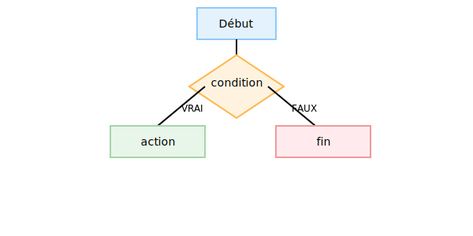
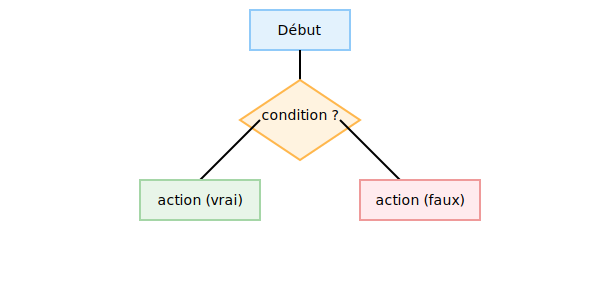
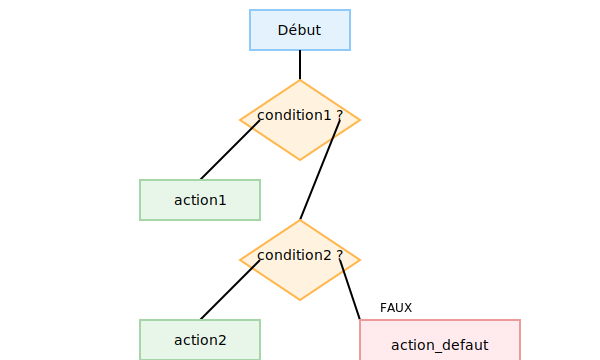

Les structures conditionnelles permettent d'exécuter des instructions différentes en fonction de conditions booléennes. Elles sont fondamentales pour le contrôle de flux dans les algorithmes. On distingue principalement : SI ... ALORS, SI ... ALORS ... SINON et SI ... SINON SI ... SINON.

IF simple

IF...ELSE

IF...ELIF...ELSE
On distingue :
IF simple : une seule branche exécutée si la condition est vraie.
IF...ELSE : deux branches, pour vrai et pour faux.
IF...ELIF...ELSE : plusieurs branches, on teste condition1, condition2, sinon action par défaut.
Exemple Python
# IF simple
if x > 0:
print("Positif")
# IF...ELSE
if x > 0:
print("Positif")
else:
print("Non positif")
# IF...ELIF...ELSE
if x > 0:
print("Positif")
elif x < 0:
print("Négatif")
else:
print("Zéro")
1. IF simple
Pseudocode
SI condition ALORS
instruction
FIN SI
Si condition est vraie, on exécute instruction. Sinon, on ne fait rien et on poursuit.
Organigramme
Organigramme IF simple : exécution de l’instruction si la condition est vraie, sinon sortie de la structure
En cas de vrai, le flux exécute l’instruction puis revient à la séquence principale. En cas de faux, on sort directement de la condition.
Exemple en Python
if condition:
instruction
2. IF...ELSE
Pseudocode
SI condition ALORS
instruction_vrai
SINON
instruction_faux
FIN SI
Si condition est vraie, on exécute instruction_vrai, sinon instruction_faux.
Organigramme
Organigramme IF...ELSE : deux branches selon que la condition est vraie ou fausse
Le flux se divise en deux chemins : la branche « VRAI » exécute instruction_vrai, puis les deux branches se rejoignent après la condition. La branche « FAUX » exécute instruction_faux.
Exemple en Python
if condition:
instruction_vrai
else:
instruction_faux
3. IF...SINON SI...SINON
Pseudocode
SI condition1 ALORS
instruction1
SINON SI condition2 ALORS
instruction2
SINON
instruction_defaut
FIN SI
Test multiple conditions séquentiellement. La première vraie exécute sa branche et quitte la structure.
Organigramme
Organigramme IF...SINON SI...SINON : tests séquentiels de plusieurs conditions
Chaque condition est évaluée dans l’ordre : la première vraie déclenche son action et termine la structure. Si aucune n'est vraie, on exécute l’action par défaut.
Exemple en Python
if condition1:
instruction1
elif condition2:
instruction2
else:
instruction_defaut
Exercices
Pseudocode + organigramme : vérifier si un nombre est pair ou impair.
Algorithme : déterminer l’âge légal de vote et afficher un message adapté.
Pseudocode : calculer la note finale : ≥ 90 : Excellent, ≥ 75 : Bien, ≥ 60 : Moyen, sinon : À revoir.
Organigramme : valider l’accès à une zone sécurisée (mot de passe + autorisation).
Pseudocode : classer trois nombres par ordre croissant.
Organigramme : calculer le maximum de deux nombres.
Pseudocode : calculer la remise : si montant ≥ 100 : 10%, sinon : 0%.
Algorithme : valider la note d’un étudiant (0 ≤ note ≤ 20).
Pseudocode : déterminer le signe d’un nombre (positif, négatif, zéro).
Organigramme : évaluer le tarif du billet : enfant (< 12), adulte (12–64), senior (≥ 65).
Consignes pédagogiques :
Ex.1 : Rédiger le pseudocode et dessiner l’organigramme pour tester la parité d’un nombre (utiliser modulo %).
Ex.2 : Écrire un algorithme demandant l’âge de l’utilisateur et affichant « Majeur » ou « Mineur ».
Ex.3 : Pseudocode pour attribuer une appréciation selon une note : ≥90 : Excellent, ≥75 : Bien, ≥60 : Moyen, sinon : À revoir.
Ex.4 : Organigramme validant l’accès à une zone sécurisée (saisie de mot de passe + vérification d’autorisation).
Ex.5 : Pseudocode pour trier trois nombres par ordre croissant (utiliser comparaisons imbriquées).
Ex.6 : Organigramme pour calculer le maximum entre deux nombres.
Ex.7 : Pseudocode calculant une remise de 10 % si le montant est ≥100, sinon 0 %.
Ex.8 : Algorithme validant une note d’étudiant (0 ≤ note ≤ 20) et affichant un message d’erreur en cas de hors bornes.
Ex.9 : Pseudocode déterminant si un nombre est positif, négatif ou nul.
Ex.10 : Organigramme évaluant le tarif d’un billet selon l’âge : enfant (< 12 ans), adulte (12–64 ans), senior (≥ 65 ans).